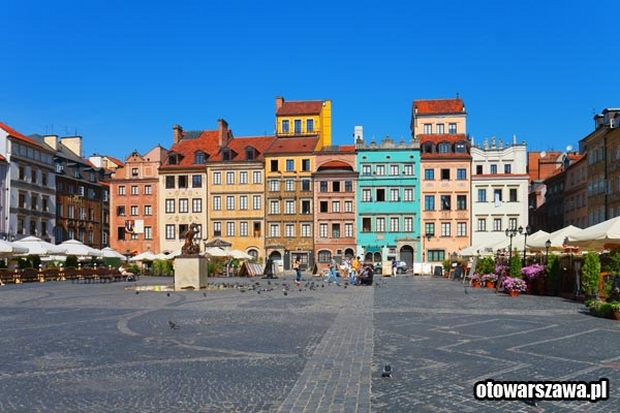

STARE MIASTO W WARSZAWIE

W sierpniu 1944, w czasie Powstania Warszawskiego, przeszło 85% zabudowy Starego Miasta zostało zniszczone przez oddziały hitlerowskie. Po wojnie, z woli społeczeństwa, podjęto trwające pięć lat dzieło odbudowy, pieczołowicie restaurując kościoły, pałace oraz Rynek Starego Miasta. Jest to wyjątkowy przykład niemal całkowitej odbudowy zabytków pochodzących z nieprzerwanego ciągu historycznego, od XIII do XX wieku.